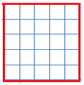
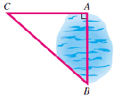
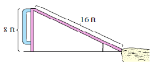
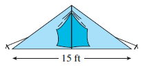
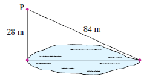

Subsection 4.3.1 What Is a Square Root?
To square a number means to multiply the number by itself. For example,
\begin{equation*}
7^2 = 7 \times 7 = 49
\end{equation*}
If you know the square of a number, can you find the original number?
The area of the square shown at right is 25 square inches. What is the length of each side of the square? Because the area of a square is found by squaring the length of a side, we are looking for a number whose square is 25.
You can probably see that the number we need is 5, because \(5^2 = 25\text{.}\) The number 5 is called a square root of 25.

Definition.
A number \(s\) is called a square root of \(N\) if \(s^2 = N\text{.}\)
Example 4.3.1.
3 is a square root of 9 because \(3^2 = 9\text{.}\)
8 is a square root of 64 because \(8^2 = 64\text{.}\)
\(\dfrac{2}{3}\) is a square root of \(\dfrac{4}{9}\) because \(\left(\dfrac{2}{3}\right)^2 = \dfrac{4}{9}\text{.}\)
Checkpoint 4.3.2.
What number is a square root of 16 ?
Notation.
We have a special symbol called a radical sign, \(\sqrt{\hphantom{0}}\text{,}\) to denote the positive square root of a number. For example,
\begin{equation*}
\sqrt{16}~~~~ \text{means} ~~~~ \text{"the positive square root of 16"}
\end{equation*}
so \(\sqrt{16} = 4.\)
Example 4.3.4.
\(\displaystyle \sqrt{144} = 12\)
\(\displaystyle \sqrt{0} = 0\)
\(\displaystyle \sqrt{1} = 1\)
\(\displaystyle \sqrt{17^2} = 17\)
Checkpoint 4.3.5.
Evaluate \(\sqrt{4}\)
You are already familiar with perfect squares, such as 25. So you already know the square roots of several numbers.
Activity 4.3.1. Square Roots.
Fill in the table below. The first two are done for you. In this table, all the numbers \(N\) are perfect squares.
| Number, \(N\)
|
\(\sqrt{N}\) |
| \(1\) |
\(\sqrt{1} = 1\) |
| \(4\) |
\(\sqrt{4} = 2\) |
|
\(\hphantom{00} = 3\) |
| \(\vphantom{0}\) |
\(\vphantom{0}\) |
| \(\vphantom{0}\) |
\(\vphantom{0}\) |
| \(\vphantom{0}\) |
\(\vphantom{0}\) |
| \(\vphantom{0}\) |
\(\vphantom{0}\) |
| \(\vphantom{0}\) |
\(\vphantom{0}\) |
| \(\vphantom{0}\) |
\(\vphantom{0}\) |
| \(\vphantom{0}\) |
\(\hphantom{00} = 10\) |
| Number, \(N\)
|
\(\sqrt{N}\) |
|
\(\hphantom{00} = 11\) |
|
\(\hphantom{00} = 12\) |
| \(\vphantom{0}\) |
\(\vphantom{0}\) |
| \(\vphantom{0}\) |
\(\vphantom{0}\) |
| \(\vphantom{0}\) |
\(\vphantom{0}\) |
| \(\vphantom{0}\) |
\(\vphantom{0}\) |
| \(\vphantom{0}\) |
\(\vphantom{0}\) |
| \(\vphantom{0}\) |
\(\vphantom{0}\) |
| \(\vphantom{0}\) |
\(\vphantom{0}\) |
| \(\vphantom{0}\) |
\(\hphantom{00} = 20\) |
Subsection 4.3.2 Approximating Square Roots
Numbers such as 16 and 25 are called perfect squares because they are the squares of whole numbers:
\begin{equation*}
16 = 4^2 ~~~~~~ \text{and} ~~~~~~ 25 = 5^2
\end{equation*}
Their square roots are easy to find. But how can we find the square roots of numbers like 3 or 5, which are not perfect squares?
You can use your calculator to find square roots, but before we do that, let's try to understand what happens.
Activity 4.3.2. More Square Roots.
We'll try to find the square root of 5 by the method of guessing and correcting.
\(\blert{\text{Step 1}}\)
Because \(2^2 = 4 \text{,}\) \(~~~~~~~~~~\sqrt{5}~\) must be bigger than 2
Because \(3^2 = 9 \text{,}\) \(~~~~~~~~~~\sqrt{5}~\) must be smaller than 3
So \(\sqrt{5}\) is a number between 2 and 3.
\(\blert{\text{Step 2}}\)
Let's guess 2.5 for \(\sqrt{5}\text{.}\) To check our guess, we can square 2.5 and see if we get 5:
\begin{equation*}
(2.5)^2 = 6.25
\end{equation*}
So 2.5 is too big to be the square root of 5.
\(\blert{\text{Step 3}}\)
Check the squares of several other numbers between 2 and 2.5:
\begin{gather*}
(2.1)^2 = 4.41\\
(2.2)^2 = 4.84 ~~~~~~ \blert{\text{Smaller than 5.}}\\
(2.3)^2 = 5.29 ~~~~~~ \blert{\text{Larger than 5.}}
\end{gather*}
From these values, we see that \(\sqrt{5}\) must be between 2.2 and 2.3.
\(\blert{\text{Step 4}}\)
Use your calculator to find the squares of several numbers between 2.2 and 2.3, until you "capture" 5.
| \((2.21)^2 = \fillinmath{XXXXXXXXXX}\) |
\((2.26)^2 = \fillinmath{XXXXXXXXXX}\) |
| \((2.22)^2 = \fillinmath{XXXXXXXXXX}\) |
\((2.27)^2 = \fillinmath{XXXXXXXXXX}\) |
| \((2.23)^2 = \fillinmath{XXXXXXXXXX}\) |
\((2.28)^2 = \fillinmath{XXXXXXXXXX}\) |
| \((2.24)^2 = \fillinmath{XXXXXXXXXX}\) |
\((2.29)^2 = \fillinmath{XXXXXXXXXX}\) |
| \((2.25)^2 = \fillinmath{XXXXXXXXXX}\) |
|
You should have discovered that \((2.23)^2\) is too small, and \((2.24)^2\) is too big. Therefore, \(\sqrt{5}\) is a number between 2.23 and 2.24.
\(\blert{\text{Step 5}}\)
Use your calculator to capture 5 between two squares.
| \((2.231)^2 = \fillinmath{XXXXXXXXXX}\) |
\((2.236)^2 = \fillinmath{XXXXXXXXXX}\) |
| \((2.232)^2 = \fillinmath{XXXXXXXXXX}\) |
\((2.237)^2 = \fillinmath{XXXXXXXXXX}\) |
| \((2.233)^2 = \fillinmath{XXXXXXXXXX}\) |
\((2.238)^2 = \fillinmath{XXXXXXXXXX}\) |
| \((2.234)^2 = \fillinmath{XXXXXXXXXX}\) |
\((2.239)^2 = \fillinmath{XXXXXXXXXX}\) |
| \((2.235)^2 = \fillinmath{XXXXXXXXXX}\) |
|
You should have discovered that \((2.236)^2\) is too small, and \((2.237)^2\) is too big. Therefore, \(\sqrt{5}\) is a number between 2.236 and 2.237.
Perhaps you think that 2.236 is close enough, and you don't want to fill in any more tables. But maybe you are curious to know how far we have to go to find the exact decimal value of \(\sqrt{5}\text{.}\)
It turns out that no matter how many decimal places we find, we will never obtain an exact decimal form for \(\sqrt{5}\text{.}\) For this reason, \(\sqrt{5}\) is called an irrational number, because it cannot be expressed as a fraction.
Definition.
An irrational number is one that cannot be written as a fraction.
There is nothing special about \(\sqrt{5}\text{.}\) All whole numbers that are not perfect squares have square roots that are irrational. However, by increasing the number of decimal places, we can find an approximation to \(\sqrt{5}\text{,}\) or to any irrational number, as accurate as we like. For example,
\begin{equation*}
\sqrt{5} \approx 2.2360679774998…
\end{equation*}
But there is no symbol to write the exact value of \(\sqrt{5}\) except for \(\sqrt{5}\) !
Most scientific calculators give values for square roots to as many digits as their displays allow. Look for a key labeled \(\boxed{\sqrt{\hphantom{0}}}\text{,}\) and enter
\begin{equation*}
5 \hphantom{0} \boxed{\sqrt{\hphantom{0}}}
\end{equation*}
(On a graphing calculator, enter the radical symbol first: \(\boxed{\sqrt{\hphantom{0}}} \hphantom{0} 5\text{.}\)) The calculator will return an approximation for \(\sqrt{5}\text{,}\) for example, 2.236068. You can then round off the number to as many decimal places as you need.
Example 4.3.7.
Use a calculator to find approximate values for each square root. Round your answers to three decimal places.
\(\displaystyle \sqrt{3}\)
\(\displaystyle \sqrt{243}\)
\(\displaystyle \sqrt{0.02}\)
Solution.
Enter \(3 \hphantom{0} \boxed{\sqrt{\hphantom{0}}}\text{,}\) and the calculator displays 1.7320508. Rounding to three decimal places gives 1.732.
Enter \(243 \hphantom{0} \boxed{\sqrt{\hphantom{0}}}\text{,}\) and the calculator displays 15.588457. Rounding to three decimal places gives 15.588.
Enter \(0.02 \hphantom{0} \boxed{\sqrt{\hphantom{0}}}\text{,}\) and the calculator displays 0.1414214. Rounding to three decimal places gives 0.141.
Checkpoint 4.3.8.
Use a calculator to approximate \(\sqrt{226}\) to three decimal places.
Subsection 4.3.3 Squares and Square Roots
If you know that the square of an unknown positive number is 36, can you find the number? Let's call the unknown number \(n\text{.}\) In math notation, the question becomes: can you find \(n\) if you know that
\begin{equation*}
n^2 = 36
\end{equation*}
Of course you can: \(n\) must be the square root of 36, or
\begin{equation*}
n = \sqrt{36} = 6
\end{equation*}
This is because squaring and taking square roots are opposite operations; each operation undoes the effects of the other. If you square a number and then take the square root of the result, you get back to the original number.
\begin{equation*}
\blert{\large\substack{\text{Start with} \\ \text{a Number}} 13 \rightarrow \large\substack{\text{Square the} \\ \text{Number}} \rightarrow 169 \rightarrow \large\substack{\text{Take the}\\ \text{Square Root}} \rightarrow 13 \hphantom{0} \large\substack{\text{Get the original}\\ \text{number back!}}}
\end{equation*}
Example 4.3.9.
If \(B\) is a positive number and \(B^2 = 784\text{,}\) what is the value of \(B\text{?}\)
Solution.
\(B\) must be the square root of 784, or \(B = \sqrt{784}\text{.}\) Using a calculator, we find that
\begin{equation*}
B = \sqrt{784} = 28
\end{equation*}
We can check our result by squaring.
\begin{equation*}
B^2 = 28^2 = 784
\end{equation*}
Checkpoint 4.3.11.
If \(p\) is a positive number, solve the equation \(p^2 = 0.0225\text{.}\)
Subsection 4.3.4 Pythagorean Theorem
You probably remember the Pythagorean Theorem about the sides of a right triangle. Recall that a right triangle is one with a right, or ninety degree, angle. The side opposite the right angle is called the hypotenuse, and the other two sides are the legs.
Pythagorean Theorem.
If the letter \(\alert{c}\) stands for the length of the hypotenuse, and the lengths of the two legs are denoted by \(\alert{a}\) and \(\alert{b}\text{,}\) then
\begin{equation*}
\alert{a^2 + b^2 = c^2}
\end{equation*}
We first studied the Pythagorean Theorem in Section 3.2. And now that we can take square roots, we can use the theorem to solve problems.
Example 4.3.12.
The two legs of a right triangle are 6 inches and 8 inches long. How long is the hypotenuse?
Solution.
We substitute the lengths of the two legs into the Pythagorean theorem for \(a\) and \(b\text{.}\)
\begin{align*}
6^2 + 8^2 \amp = c^2 \amp \amp \blert{\text{Compute the powers.}}\\
36 + 64 \amp = c^2 \amp \amp \blert{\text{Add.}}\\
100 \amp = c^2 \amp \amp \blert{\text{Take square roots.}}\\
\sqrt{100} \amp = c \amp \amp \blert{\text{Simplify the radical.}}\\
10 \amp = c
\end{align*}
The hypotenuse is 10 inches long.
Checkpoint 4.3.13.
The two short sides of a right triangle are 9 meters and 40 meters. What is the length of the hypotenuse?
Example 4.3.14.
A triathlete wants to know the distance across a small lake, from point \(A\) to point \(B\text{.}\) She locates point \(C\) on one side of the lake to make a right triangle as shown. The distance from \(A\) to \(C\) is 3 miles, and the distance from \(B\) to \(C\) is 4 miles. How far is it from \(A\) to \(B\) across the lake?

Solution.
We can apply the Pythagorean theorem. Let's let \(d\) represent the distance across the lake, from \(A\) to \(B\text{.}\) Then
\begin{equation*}
d^2 + 3^2 = 4^2
\end{equation*}
We square the numbers to get
\begin{equation*}
d^2+ 9 = 16
\end{equation*}
If 9 added to \(d^2\) gives 16, then \(d^2\) must be equal to 7.
\begin{equation*}
d^2 = 7
\end{equation*}
So \(d\) must be the square root of 7.
\begin{equation*}
d = \sqrt{7} = 2.64575 ...
\end{equation*}
The distance across the lake is about 2.65 miles.
Checkpoint 4.3.15.
The Department of Roads wants to know the distance through a mountain in the path of a proposed highway from \(A\) to \(B\text{.}\) The field engineer locates point \(C\) on a line perpendicular to the planned route. He then measures the distance from \(A\) to \(C\) as 2 miles, and the distance from \(B\) to \(C\) as 3 miles. How far is it from \(A\) to \(B\) through the mountain?
Activity 4.3.3. Delbert's Bike Trip.
In a previous lesson, we considered a problem about Delbert's bike trip.
Delbert sets out heading west, but his compass is not completely accurate. He is actually riding on a course slightly north of west. When he reaches the canyon, his odometer reads 20.5 miles instead of 20 miles, as the guide book described. How far south must Delbert ride to reach the bridge over the canyon?
Here is a picture of the situation.
Let us call the distance Delbert has to ride \(D\text{.}\) The three distances, 20 miles, 20.5 miles, and \(D\) miles, form a right triangle. Write an equation using the Pythagorean theorem.
Now square the two numbers in your equation to get a new equation.
What does your new equation tell you about the value of \(D^2\) ?
\begin{equation*}
D^2 =
\end{equation*}
Now you can find \(D\text{.}\) Use a calculator to find that
\begin{equation*}
D =
\end{equation*}
Delbert must ride another miles to reach the bridge. (Do you find the answer surprising?)
Activity 4.3.4. Spiral of Roots.
The figure at the start of this section is called the Spiral of Theodorus. Theodorus of Cyrene was a Greek mathematician who lived in the 5th century BCE. He used the spiral to prove that the square roots of the non-square numbers up to 17 are irrational.
To make the spiral, you start with the right triangle shaded in blue. Then you use the hypotenuse of that triangle as one leg of another right triangle, with a second leg of length 1. Continue the process, adding a new right triangle at each step.
Use the Pythagorean theorem to find the hypotenuse of the first right triangle, shaded blue in the figure.
Using your answer to part 1, find the hypotenuse of the second right triangle.
Continue to find the hypotenuse of each right triangle in the figure. Do you see a pattern?
Challenge Problem.
When the railroad lays a new track, they always leave a small amount of space between the ends of adjacent rails. This is because the rails expand on hot days, and without some room between rails the tracks would buckle. Suppose that a fifteen mile section of rail expands one inch, causing the track to buckle as shown in the figure. (Not to scale!)
-
How high will the rail rise in the middle? First, choose your best guess:
1 centimeter
2 inches
3 feet
15 yards
Now work out the answer. Be careful with units!
Exercises 4.3.6 Practice 4.3
Exercise Group.
For Problems 1-4, find the positive square root of each number.
5.
What is the difference between the square of a number and the square root of a number? Give an example.
6.
Which of the following are true?
\(\displaystyle 4^2 = 16\)
\(\displaystyle 16^2 = 4\)
\(\displaystyle 16 = \sqrt{4}\)
\(\displaystyle 4 = \sqrt{16}\)
7.
What is a radical sign, and what does it mean?
8.
What number is its own square root? Is there another such number?
Exercise Group.
For Problems 9-16, evaluate the radical. For Problems 13-16, recall that we multiply two fractions together by multiplying their numerators together and multiplying their denominators together.
9.
\(\displaystyle \sqrt{49}\)
\(\displaystyle \sqrt{169}\)
10.
\(\displaystyle \sqrt{0}\)
\(\displaystyle \sqrt{9}\)
11.
\(\displaystyle \sqrt{121}\)
\(\displaystyle \sqrt{144}\)
12.
\(\displaystyle \sqrt{400}\)
\(\displaystyle \sqrt{900}\)
13.
\(\displaystyle \sqrt{\dfrac{1}{16}}\)
\(\displaystyle \sqrt{\dfrac{1}{25}}\)
14.
\(\displaystyle \sqrt{\dfrac{9}{49}}\)
\(\displaystyle \sqrt{\dfrac{16}{81}}\)
15.
\(\displaystyle \sqrt{\dfrac{196}{25}}\)
\(\displaystyle \sqrt{\dfrac{4}{289}}\)
16.
\(\displaystyle \sqrt{\dfrac{256}{121}}\)
\(\displaystyle \sqrt{\dfrac{169}{324}}\)
17.
Use your calculator to make a table showing the whole numbers between 1 and 10 and their square roots. Round your answers to three decimal places.
| \(N\) |
1 |
2 |
3 |
4 |
5 |
6 |
7 |
8 |
9 |
10 |
| \(\sqrt{N}\) |
\(\hphantom{000}\) |
\(\hphantom{000}\) |
\(\hphantom{000}\) |
\(\hphantom{000}\) |
\(\hphantom{000}\) |
\(\hphantom{000}\) |
\(\hphantom{000}\) |
\(\hphantom{000}\) |
\(\hphantom{000}\) |
\(\hphantom{000}\) |
18.
Use your calculator to make a table showing the whole numbers between 11 and 20 and their square roots. Round your answers to three decimal places.
| \(N\) |
11 |
12 |
13 |
14 |
15 |
16 |
17 |
18 |
19 |
20 |
| \(\sqrt{N}\) |
\(\hphantom{000}\) |
\(\hphantom{000}\) |
\(\hphantom{000}\) |
\(\hphantom{000}\) |
\(\hphantom{000}\) |
\(\hphantom{000}\) |
\(\hphantom{000}\) |
\(\hphantom{000}\) |
\(\hphantom{000}\) |
\(\hphantom{000}\) |
Exercise Group.
For Problems 19-24, use your calculator to approximate the square roots. Round your answers to three decimal places.
19.
\(\displaystyle \sqrt{48.6}\)
\(\displaystyle \sqrt{29.3}\)
20.
\(\displaystyle \sqrt{56.8}\)
\(\displaystyle \sqrt{73.9}\)
21.
\(\displaystyle \sqrt{1.4}\)
\(\displaystyle \sqrt{1.8}\)
22.
\(\displaystyle \sqrt{0.6}\)
\(\displaystyle \sqrt{0.3}\)
23.
\(\displaystyle \sqrt{419}\)
\(\displaystyle \sqrt{836}\)
24.
\(\displaystyle \sqrt{2498}\)
\(\displaystyle \sqrt{5612}\)
Exercise Group.
For Problems 25-28, use the formula to answer the question.
25.
The distance \(m\) in miles that you can see on a clear day from a height of \(h\) miles is given by the formula
\begin{equation*}
m = 89.4 \sqrt{h}
\end{equation*}
How far can you see from an airplane flying at an altitude of 4.7 miles?
26.
Insurance investigators use the length in feet, \(d\text{,}\) of a car's skid marks to estimate its speed in miles per hour just before braking. The speed \(v\) is given by the formula
\begin{equation*}
v = \sqrt{24 d}
\end{equation*}
How fast was a car traveling if it left skid marks are 200 feet long?
27.
The period \(T\) of a pendulum (the time it takes to complete one full swing) is given in seconds by the formula
\begin{equation*}
T = 6.28 \sqrt{\dfrac{L}{32}}
\end{equation*}
where \(L\) is the length of the pendulum in feet. What is the period of the Foucault pendulum in the United Nations Headquarters in New York, whose length is 75 feet?
28.
If an object falls from a height \(h\) in meters, the time \(t\) it will take to reach the ground is given in seconds by the formula
\begin{equation*}
t = \sqrt{\dfrac{h}{4.9}}
\end{equation*}
How long would it take for a pebble to fall from the top of the Sears Tower in Chicago, which is 443.2 meters tall?
Exercise Group.
For Problems 29-32, put the set of numbers in order from smallest to largest.Try not to use a calculator.
29.
\(\dfrac{5}{4}, ~~ 2, ~~ \sqrt{8}, ~~ 2.3\)
30.
\(3.5, ~~ \sqrt{10}, ~~ \dfrac{11}{4}, ~~ 3\)
31.
\(2\sqrt{3}, ~~ 3, ~~ \dfrac{23}{6}, ~~ \sqrt{6}\)
32.
\(\sqrt{120}, ~~ 10\sqrt{2}, ~~ 12, ~~ \dfrac{120}{11}\)
Exercise Group.
Each number in Problems 33-38 is approximately the square root of a whole number. Find the whole number.
33.
9.220
34.
6.557
35.
12.961
36.
23.937
37.
63.891
38.
39.281
39.
If you start with any positive number and square it, and then take the square root of the result, what do you end up with? Give an example.
40.
If you start with any positive number and take its square root, and then square the result, what do you end up with? Give an example.
Exercise Group.
For Problems 41-48, simplify the expressions without using pencil, paper, or calculator!
41.
\(\displaystyle (\sqrt{144})^2\)
\(\displaystyle \sqrt{9^2}\)
42.
\(\displaystyle (\sqrt{121})^2\)
\(\displaystyle \sqrt{8^2}\)
43.
\(\displaystyle \sqrt{81^2}\)
\(\displaystyle \sqrt{(16)(16)}\)
44.
\(\displaystyle \sqrt{64^2}\)
\(\displaystyle \sqrt{(49)(49)}\)
45.
\(\displaystyle (\sqrt{17})^2\)
\(\displaystyle \sqrt{39} \sqrt{39}\)
46.
\(\displaystyle (\sqrt{23})^2\)
\(\displaystyle \sqrt{2}\sqrt{2}\)
47.
\(\displaystyle \sqrt{453^2}\)
\(\displaystyle (\sqrt{208})(\sqrt{208})\)
48.
\(\displaystyle \sqrt{872^2}\)
\(\displaystyle (\sqrt{147})(\sqrt{147})\)
Exercise Group.
For Problems 49-54, solve the equation.
49.
\(t^2 = 10,000\)
50.
\(b^2 = \dfrac{4}{9}\)
51.
\(u^2 = \dfrac{2}{98}\)
52.
\(h^2 = 0.04\)
53.
\(n^2 = 0.25\)
54.
\(m^2 = (17)^2\)
Exercise Group.
For Problems 55-62, find the missing side of the right triangle.
55.
56.
57.
58.
59.
60.
61.
62.
Exercise Group.
For Problems 63-88 use the Pythagorean theorem to solve.
63.
Juliet's window is 24 feet above the ground, and there is a 10-foot moat at the base of the wall. How long a ladder will Romeo need to reach the window?
64.
It is 16 miles from the highway to Sunrise, and 30 miles from the junction to Conway. How far is it along the back road from Sunrise to Conway?
65.
Clark is assembling a swing set at the neighborhood park. The slide is 16 feet long, and 8 feet high. How far should the sand pit at the bottom of the slide be positioned from the base of the ladder?

66.
Marlene visited the Quetzalcoatl pyramid near Mexico City last summer. She measured the base and found it is about 1400 feet on each side. She unrolled a ball of string as she climbed the face of the pyramid, and it was about 722 feet to the top. How tall is the pyramid?
67.
A pup tent is made out of two pieces of oil cloth sewn together along the sides. The floor piece is 15 feet wide, and the piece for the top is 17 feet wide. Poles are erected along the center line to hold the roof up. How long should the poles be?

68.
A surveyor would like to know the distance across the lake shown. She picks a spot on a line perpendicular to the width of the lake, and measures the two distances shown. How wide is the lake?
